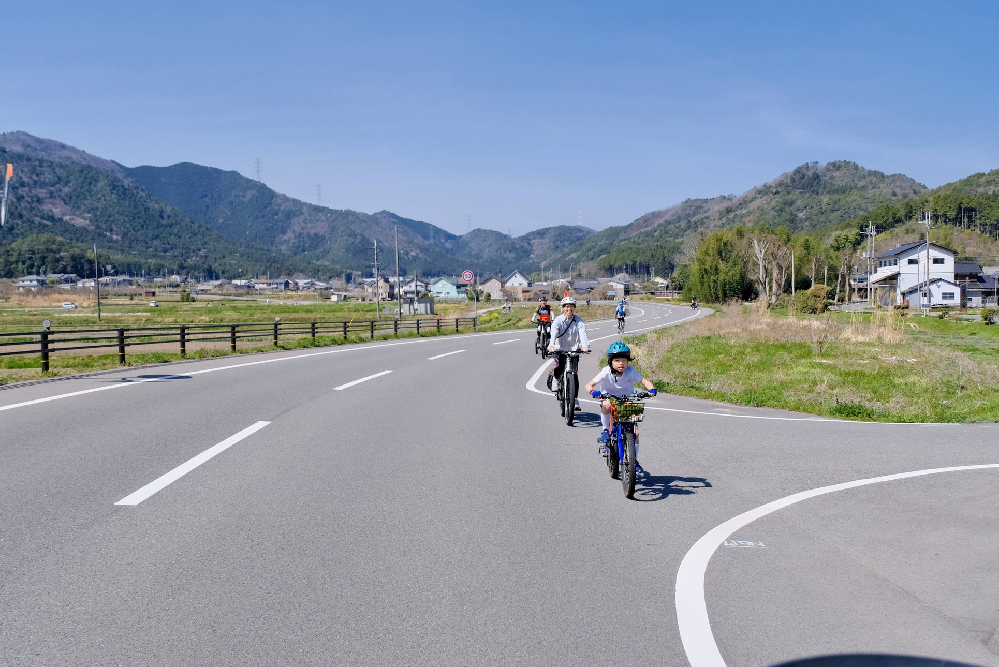

Meeting & Departure
Meet in Fukusumi Area (Parking available).
"Fukusumi" flourished as a post town on the highway to Kyoto. Here remains the untouched, authentic original scenery of Japan, not just a tourist destination.
Townscapes of the post town selected as a National Preservation District and the beautiful rural scenery spreading around it. Exchange greetings with locals working in fields, visit old shrines. Spend a relaxing time as if you were living in this land.

Post Town Scenery
Atmospheric merchant houses reminiscent of the
bustling past.

Satoyama Landscape
Contrast of fields and mountains changing
expressions with seasons.

Touching Lives
A glimpse into the daily life of Tamba-Sasayama.
Meet in Fukusumi Area (Parking available).
Ride slowly through the old streetscapes along the highway.
Extend the ride to the nature-rich farming area. Guide to shrines and scenic spots.
Return to the starting point and disband.